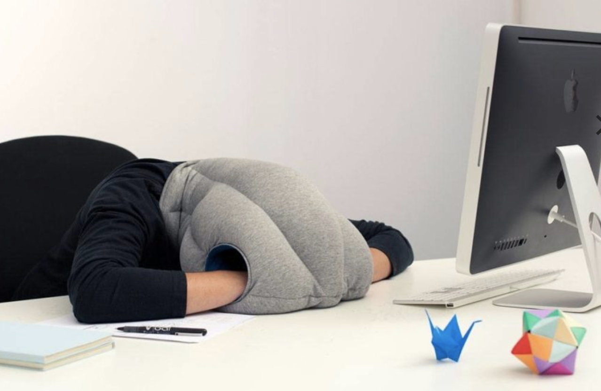

Magic nap pillow travel pillow can snooze whether it is lying on the table,sitting in the office, at the airport, or on the train, can let sleep whenever and wherever possible. It looks like a large hood, almost completely covering the head and neck, only his nose and mouth breathing. It also has two side holes, a user can extend the hand, completely isolated from the external interference, resulting in the privacy. 